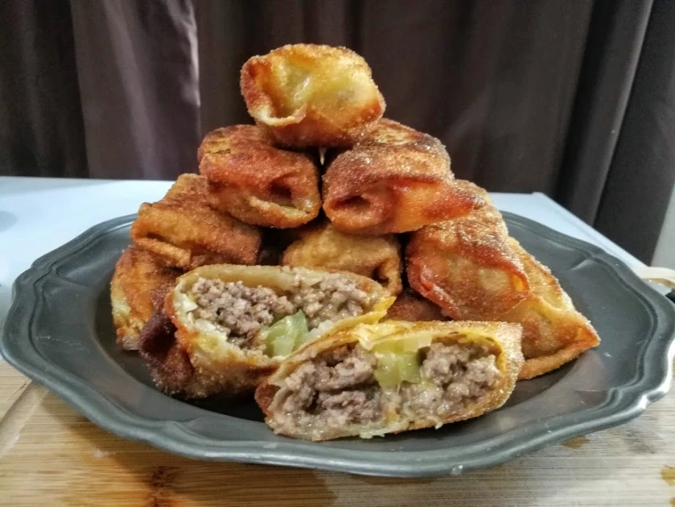

Home
Cheeseburger Eggrolls

Description
Originating in Pandaria, the cheeseburger-eggroll exists a fusion of Human and Pandaren cuisine. It's crispy eggroll shell locks in the juicy and savory cheeseburger insides. The result: an exuisite yet simple flavorbomb.
Ingredients
- 1lb (500 g) ground beef or meat of choice
- 12 eggroll wrappers
- 3 Steamwheedle (or American) cheese slices, quartered
- 1 cup shredded cheese of choice
- 1 Tbsp Darkshire (or Worcestershire) sauce
- 3 cloves garlic, minced
- Condiments as desired (onion, pickle, bacon, ketchup, mustard, whatever)
Instructions